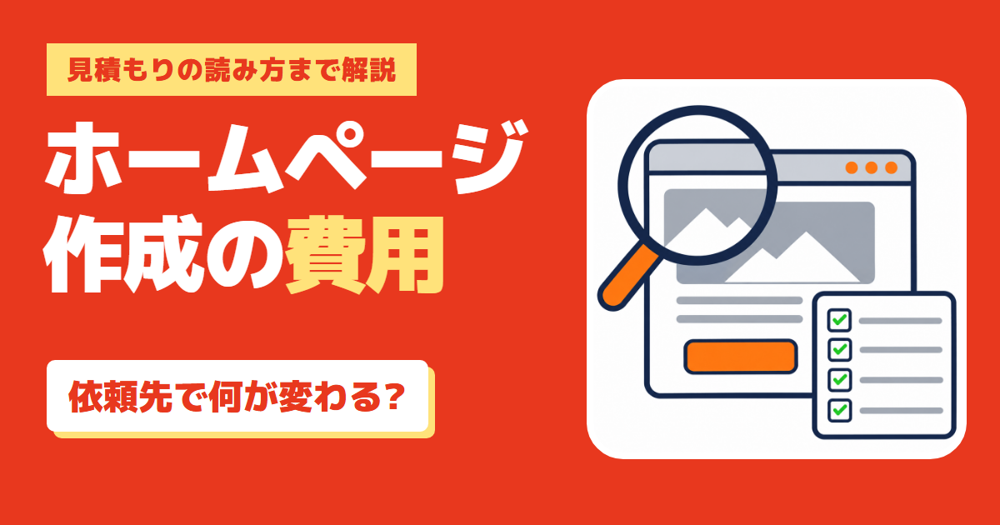

コラム ／ LP・サイト
本記事にはアフィリエイト広告(A8.net)を利用したリンクが含まれます。リンク経由でお申し込みがあった場合、運営者(SET UP)が報酬を受け取ることがあります。紹介するサービスの選定と評価は、運営者の基準で行っています。
ホームページ作成の費用と相場。依頼先別の違いと、広告に使うなら見積もりで確かめる項目

ホームページの費用は、数千円という話から数十万円という話まで幅があります。この記事では、依頼先別の費用の出方、AIの作成ツールで作る場合の費用、維持費、補助金の条件、広告のリンク先として確かめたい項目を、各社の公式情報と、各社が示す目安(2026年11月24日に確認)で整理します。フリーランスと制作会社の金額は、公的な統計が見つからなかったため、「相場は○円」と一つにまとめず、どの会社の何の数字かを添えて並べます。
ホームページを作りたいと思って「費用」を調べると、数千円で済むという話と、数十万円かかるという話が並んでいて、何を信じてよいか分からなくなります。差が大きいのは、嘘だからではなく、誰がどこまで作るのか、作ったあとに何を自分で持つのかが、それぞれ違うからです。
この記事は、運営者(SET UP)が、各社の公式サイトと公式ヘルプ、仲介会社などが公開している目安のページを読んで整理した内容です。私は、ここで取り上げるサービスを自分で契約して使ったことはありません。料金と仕様は各社の記載にもとづき、確認した日は2026年11月24日です。料金は変わるため、申し込む前に必ず公式ページで確かめてください。
先に、この記事の数字の扱いを書いておきます。フリーランスや制作会社に頼んだときの費用は、公的機関や業界団体の統計が見つかりませんでした。そこで、「相場は○円」と一つの数字や幅にまとめることはしません。制作会社が公開している料金表、会社が「目安」として示している数字、仲介会社が示している数字を、出どころごとに分けて並べます。平均も、私は作りません。税込か税抜かも出どころごとに違うため、行ごとに書きます。そのうえで、見積もりを何と比べ、どこを確かめれば高いか安いかを自分で判断できるのかを、できるだけ具体的に書きます。広告を出す予定がある人向けに、リンク先として必要になる費用の見方も入れました。
結論:費用の早見表(自作・サブスク・フリーランス・制作会社)
- 費用は、「初期費用」「毎月かかる費用」「更新のたびにかかる費用」の3つに分けて比べる。最初の金額だけを見ると、あとから差が開く
- 自分で作るAIの作成サービスは、公式の料金表で、36ヵ月一括払いの月額換算で660円、毎月払いは1,540円(税込)の例がある。ただし作る手間は自分が負う
- 制作会社の料金は見積もり制のことが多い。ホームページドットコム(ホームページ.com)のように、サーバー・ドメイン・サポートを見積もりに含める会社もある
- フリーランスと制作会社の金額は、公的な統計が見つからない。会社ごとの料金表と、各社が示す目安を、出どころごとに分けて並べた。足したり平均したりはしていない。税込・税抜も出どころで違う
- 月額で払い続ける制作(あきばれ、ネオインデックスの定額制)は、初期費用と月額を別に見る。月額は、契約が続く間かかる
- 補助金は、小規模事業者持続化補助金が「対象になりうる」。ただし条件が4つあり、公募の締切も近い。デジタル化・AI導入補助金2026(旧IT導入補助金)は、ホームページ制作は対象外と公式FAQにある
- 広告を出すなら、計測タグを入れられるか、フォームの完了ページを作れるか、ドメインが誰の名義かを、契約の前に確かめる
まず、4つの作り方を並べます。金額は、各社の公式の料金表か、各社が示す目安のうち、出どころを書けるものだけを入れています。フリーランスと制作会社の欄は、出どころごとに税の扱いが違い、一つの数字にまとめられないため、行の中で分けて書いています。
| 作り方 | 費用の出方 | この記事で確認できた金額(税の扱いは行ごと) | 向く場面 |
|---|---|---|---|
| 自分で作る(AIの作成サービスなど) | 月額。契約期間が長いほど月額換算が下がる例がある(ロリポップ！AIホームページ、ジンドゥー) | ロリポップ！AIホームページは36ヵ月一括払いの月額換算で660円、毎月払いは1,540円。ジンドゥー AIビルダーは無料プランあり、有料はStartの月1,290円(12か月契約の月額換算)から。いずれも公式の料金表で、税込 | ページ数が少なく、更新も自分でできる人 |
| サブスク(月額制の制作) | 初期費用が低めで、月額を払い続ける形 | 6サービスの比較は別の記事にまとめている | 初期費用を抑えたい人。解約後の扱いは先に確認する |
| フリーランスに頼む | 見積もり。作業の範囲で決まる | 公的な統計は見つからなかった。ランサーズが示す目安では10万〜20万円(更新2024年6月12日、税の記載なし)。あきばれが示す目安では、フリーランス・個人の初期費用が10万〜50万円程度(税の記載なし)。レバテックはページ数別の目安(第4節) | 担当者と直接やり取りして、範囲を細かく決めたい人 |
| 制作会社に頼む(一括・見積もり型) | 見積もり制が多い。含める範囲は会社ごとに違う | 公開料金の例。CQデザインは8ページまで90万円(税抜)から。タロウズはモデルケースで5ページ45万円(税の記載なし)から。ホームページドットコムは「初期費用0円〜」で、料金は要望によって見積もり。各社が示す目安は第2節 | デザインや文章まで任せたい人 |
| 制作会社に頼む(月額型) | 初期費用が低めか0円で、月額を払い続ける | あきばれホームページの初めてパックは、初期54,780円〜と月額6,490円(税込)。ネオインデックスの定額制は、制作費0円・月額6万円〜(税と最低期間の記載なし) | 初期費用を抑えたい人。続ける期間の総額と、やめるときの条件を先に確認する |
ロリポップ！AIホームページ(GMOペパボ)
公式サイト:【ロリポップ！AIホームページ】
早見表の「自分で作る」の中身は、後ろの節で順に書きます。サブスクとAIの詳しい比較は、それぞれ別の記事に分けました。ここでは、全体の見取り図を持つことを優先してください。
依頼先別の費用と向き不向き
ホームページの費用が分かりにくい一番の理由は、「作る人の手間」と「作ったあとの運用」の、どちらを誰が払うのかが、依頼先でまるで違うことです。4つの作り方を、費用の出方と向き不向きで見ていきます。
自分で作る:費用は小さく、手間と責任は自分に来る
自分で作る場合の費用は、作成サービスの月額と、独自ドメインの費用が中心です。制作を人に頼む費用がない分、金額は小さくなります。そのかわり、文章、写真、ページの構成、公開後の更新まで、自分の仕事になります。
ここで、ジンドゥー AIビルダーの公式の記載を例に、料金の見え方を整理します。ジンドゥーの料金は、見る場所で数字が変わります。特定商取引法に基づく表記では、Startは1ヶ月1,720円、1年15,480円、2年27,600円(いずれも初回、税込)です。料金ページでは、Startが月1,290円、Growが月2,070円(いずれも12か月契約の月額換算、消費税込み)と書かれています。1年分の15,480円を12で割ると1,290円で、料金ページの数字と合います。「月いくら」と見える数字と、実際に払う金額は、契約期間で変わることを、この例が示しています。
ジンドゥー AIビルダー(KDDIウェブコミュニケーションズ)
- 無料のFreeプラン(0円)は、5ページ、サブドメイン、独自ドメインは使えない、アクセス解析なし、広告が表示される
- 有料のStartは10ページ・30GB、Growは50ページ・50GB。フォームは全プランで使える
- Startの初回は、1ヶ月1,720円、1年15,480円、2年27,600円。Growの初回は、1ヶ月2,720円、1年24,840円、2年44,640円
- 更新のときは、ドメインの利用枠が加わる(1ヶ月220円、1年2,110円、2年4,220円)
出典:ジンドゥー「特定商取引法に基づく表記」「料金ページ」(2026年11月24日確認、税込)。独自ドメインはStartとGrowに含まれるが、取得費用の扱いは確認できなかった。
公式サイト:ジンドゥー
自分で作る方法が向くのは、ページ数が少なくて内容が頻繁に変わらないとき、あるいは、まず小さく出して反応を見たいときです。逆に、デザインの細部まで作り込みたい、文章を整えたいという場合は、自分の時間がいちばん高い費用になります。
サブスク:初期費用を抑えて、月額で払い続ける
サブスクは、ホームページの制作と運用を、月額で払う形です。初期費用を抑えられるサービスが多い一方で、払い続ける期間が長くなると総額が大きくなります。解約したあとに、サイトやドメインが手元に残るのかどうかは、サービスごとに違います。6サービスを規約で確認した結果は、ホームページのサブスク比較にまとめました。
フリーランス:範囲を決めて、直接頼む
フリーランスは、個人に直接頼む形です。作業の範囲(ページ数、デザインを起こすか、文章を書くか、写真を撮るか、公開後の更新を頼むか)を決めて、見積もりをもらいます。担当者とやり取りしやすい一方で、同じ「ホームページ制作」でも、含まれる範囲が人によって違います。金額だけで比べず、何をしてもらえるのかを書き出して比べるのが基本です。
金額については、公的機関や業界団体の統計は見つかりませんでした。次の表は、フリーランスについて金額を示している3つの出どころを、そのまま並べたものです。出どころごとに、調べ方も、含める範囲も、更新日も違うため、足し合わせたり、真ん中を取ったりはしていません。
| 出どころ | 示している金額 | 備考 |
|---|---|---|
| ランサーズ(仲介会社)の費用の解説 | フリーランス 10万〜20万円 | 更新日は2024年6月12日。税の記載なし |
| あきばれホームページが「当社調べの目安」として示す数字 | フリーランス・個人 初期費用10万〜50万円程度 | 税の記載なし。同社は制作会社でもあり、自社の料金とは別の数字 |
| レバテック(仲介会社)の費用の解説 | 1〜5ページ 2万〜5万円、5〜10ページ 4万〜15万円、10〜30ページ 15万〜50万円 | 更新日は2026年7月17日。税の記載なし。大規模の欄は、表と本文が食い違うため載せない |
3つの数字は、上限も下限もそろいません。いくらが妥当かは、ここから決められません。この表は、「見積もりが、どの出どころの数字と比べてどの位置にあるか」を見るための材料として使い、そのうえで、作業の範囲を書き出して比べてください。
制作会社:任せる範囲が広いぶん、見積もりの読み方が大事
制作会社は、デザイン、文章、公開の設定までを一括で頼める形です。料金は見積もり制の会社が多く、含まれる範囲も会社ごとに違います。例として、ホームページドットコム(株式会社ビジョン、東証プライム)の公式の記載を整理します。
ホームページドットコム(株式会社ビジョン)
- 形は制作。訪問またはオンラインで聞き取り、デザイナーが制作する。料金は要望によって異なり、複数のプランから選ぶことが多い、オーダーメイドもできる、と公式のよくある質問に書かれている
- トップページには「初期費用0円〜」とある。公式サイトでは、初期設定費(通常165,000円・税込)が0円になるサービスを実施中と表示している(コーポレート・ブランディングどちらのプランも対象。予告なく終了する場合あり。2026年11月24日時点)
- 見積もりに含まれるものは、サーバー、ドメイン取得、サポート。ページ数の上限はなく、簡単な更新はCMSで自分でできる(更新の費用は無料)。大幅なページ追加や更新は、追加費用になる
- 問い合わせや申し込みのフォームを付けられる。メールアカウントは10。保守(改ざん監視、アップデートの代行、復旧、バックアップ)があるが、料金の記載は確認できなかった
- 支払いは、現金一括、分割、カードが選べる(契約後)
出典:ホームページドットコム「トップページ」「よくある質問」「会社概要」(2026年11月24日確認)。月額、最低契約期間、解約の条件、ドメインの名義、計測タグ(GA4など)の設置は、確認できなかった。
公式サイト:ホームページ.com
この例で大事なのは、「初期費用0円」と書かれていても、それが全体の費用が0円という意味ではない点です。確認できなかった項目(月額、契約期間、解約、ドメインの名義、計測タグ)は、契約の前に必ず質問する項目になります。これは、後ろの「見積もりで確かめる項目」にまとめています。
制作会社の公開料金と、各社が示す目安を分けて見る
制作会社の金額には、2種類あります。自社のサービスとして公開している料金と、「このくらいが目安」として示している数字です。前者は、その会社に頼んだときの金額で、後者は、その会社が自社の料金とは別に示している数字です。混ぜて読むと、比べる相手を間違えます。
A. 制作会社が公開している料金(一括で払う型)
| 会社の料金表 | 公開している金額 | 税の扱い |
|---|---|---|
| CQデザイン(サンクエスト) | 8ページまで90万円、10ページまで150万円、12ページまで240万円。保守は月7,900円(12か月〜) | 税抜 |
| タロウズ | モデルケースとして、5ページ45万円、10ページ75万円、15ページ125万円。ページ制作は1ページ30,000円、シングルページのパックは99,800円 | 記載なし |
B. 各社が「目安」として示している数字(その会社の料金ではない)
| 出どころ | 示している金額 | 備考 |
|---|---|---|
| あきばれホームページの「当社調べの目安」 | 制作会社 初期費用30万〜150万円(大規模は300万円〜)、月額1万〜5万円程度 | 税の記載なし |
| ランサーズ(仲介会社)の費用の解説 | 制作会社 10万〜300万円 | 更新日は2024年6月12日。税の記載なし |
| レバテック(仲介会社)の費用の解説 | 1〜5ページ 3万〜40万円、5〜10ページ 5万〜20万円、10〜30ページ 20万〜80万円 | 更新日は2026年7月17日。税の記載なし。大規模の欄は載せない |
| ネオインデックスがまとめた「東京の相場表」 | S 300万円以上、A 180万〜280万円、B 80万〜180万円、C 30万〜80万円、D 10万〜30万円 | 同社の料金ではなく、同社が調べてまとめた表。税の記載なし。ランクの分け方は、同社のページで確認してください |
もう1つ、実際に発注された金額の集計があります。Web幹事は、同社を経由して制作会社へ発注された企業サイトの金額を、2023年7月から2026年6月まで集計し、中央値が約51万円、平均が約101万円と示しています。ただし、これはWeb幹事経由の発注だけで、フリーランスへの発注は含まれません。ホームページ制作全体の相場ではないので、そのつもりで読んでください。
月額で払い続ける制作会社の型
初期費用を低くして、月額で払い続ける形の会社もあります。この型は、初期費用と月額を別に見て、続ける期間の総額と、やめるときの条件を確認します。
| 会社の料金表 | 公開している金額 | 契約と税の扱い |
|---|---|---|
| あきばれホームページ | 初めてパック 初期費用54,780円〜、月額6,490円。業種パックなどは初期費用65,780円 | 税込。最低利用4か月分を申込時に支払い、その後は月単位で解約できる |
| ネオインデックスの定額制 | 制作費0円、月額6万円〜 | 税と最低期間の記載なし。契約の前に聞く |
AIの作成サービスで作る場合の費用
AIの作成サービスには、36ヵ月一括の月額換算で月660円から使える例があります。ここでは、その料金と手間を、公式の料金表で見ます。AIで作ることの弱い点は、別の記事に分けています。
料金:36ヵ月一括払いの月額換算で660円、毎月払いは1,540円(ロリポップ！AIホームページ)
ロリポップ！AIホームページ(GMOペパボ)の公式の料金は、次のとおりです(税込、1サイト)。
| 契約期間 | 月額(税込) | 支払い |
|---|---|---|
| 1ヵ月 | 1,540円 | 毎月払い(独自ドメインなし) |
| 12ヵ月 | 1,210円 | 一括払い(月額換算) |
| 24ヵ月 | 1,100円 | 一括払い(月額換算) |
| 36ヵ月 | 660円 | 一括払い(月額換算) |
10日間の無料期間があり、クレジットカードの登録は要らないと公式に書かれています。独自ドメインは、12ヵ月以上の契約で、1年分の取得費用が含まれます。ただし、含まれるのは初年度だけで、2年目からは通常の更新料金がかかり、自動更新になります。ドメインの管理はムームードメインで、すでに持っているドメインをつなぐこともできます(公式のヘルプに案内あり)。
広告（GMOペパボの広告素材）。公開までの時間は、文章や写真の用意によって変わります。料金は上の表をご覧ください。
ロリポップ！レンタルサーバーを使っている人も、AIホームページは別の契約です。解約したあとのサイトとドメインの扱いは、AIでホームページを作るデメリットにまとめています。
無料から始められる:ジンドゥーのFree
ジンドゥーには、0円のFreeプランがあります。5ページまで、サブドメインで公開、独自ドメインは使えない、アクセス解析がない、広告が表示される、という条件です。費用をかけずに試す入口としては使えますが、広告のリンク先として使うには、アクセス解析がない点が引っかかります(後ろの「広告を出すなら」の節で触れます)。
小さいのは「費用」と「手間」。ただし全部ではない
ここまでの料金を並べると、制作を頼む費用に比べて、自分で作る費用は小さく見えます。ただし、小さいのは作成サービスの月額と、作るための手間です。文章の中身、写真、何を載せるかを決める仕事は、自分に残ります。AIが作ってくれる下書きを、自分の事業の言葉に直す時間は、金額に表れない費用です。
「AIなら誰でも簡単」と言い切ることは、私にはできません。作ったあとに、自分でどこまで直せるのか、計測タグを入れられるのか、解約したあとにサイトやドメインがどうなるのかは、ツールごとに違います。その確認は、AIでホームページを作るデメリットにまとめました。費用だけで決める前に、そちらも見てください。
ページ数・機能別の相場
「ページ数が増えるといくら上がるのか」「予約機能を付けるといくらか」は、いちばん知りたい情報です。公的な統計はないものの、ページ数と金額を示している会社はあります。この節では、ページ数との関係を示している出どころだけを、会社ごとに分けて並べます。出どころのはっきりしない金額は載せません。
| 出どころ | ページ数と金額 | 種類・税の扱い |
|---|---|---|
| CQデザインの料金表 | 8ページまで90万円、10ページまで150万円、12ページまで240万円 | 自社の料金。税抜 |
| タロウズの料金表 | モデルケース 5ページ45万円、10ページ75万円、15ページ125万円。ページ制作は1ページ30,000円、シングルページのパックは99,800円 | 自社の料金。税の記載なし |
| クラウドワークスの「発注相場」 | デザインとコーディング(TOPと下層2ページ)で200,000円〜。TOPのデザインのみは、1ページ50,000円〜 | 仲介会社が示す目安。算出の方法と税の記載なし |
| レバテックの費用の解説(2026年7月17日更新) | フリーランス/制作会社の順に、1〜5ページ 2万〜5万円/3万〜40万円、5〜10ページ 4万〜15万円/5万〜20万円、10〜30ページ 15万〜50万円/20万〜80万円 | 仲介会社が示す目安。税の記載なし。大規模の欄は載せない |
見比べると、同じ「10ページ前後」でも、出どころによって金額の桁が変わります。これは、誰が作るか、デザインや文章をどこまで含めるかが違うためだと考えられます(これは私の推測で、各社が書いているわけではありません)。見積もりをもらったら、「何ページ分で、どの作業を含む金額か」を先に確認してください。
そのうえで、費用が何で増えるのかの構造は、公式の記載から説明できます。
ページ数:上限が決まっているサービスと、上限がない会社
作成サービスでは、プランごとに、ページ数の上限があります。ジンドゥーでは、Freeが5ページ、Startが10ページ、Growが50ページです。ページが増えると、上のプランに切り替える必要が出ます。一方、ホームページドットコムは、ページ数の上限がないと案内されています。上限がない代わりに、大幅なページの追加や更新は追加費用になるとも書かれています。
つまり、ページ数の費用は、「上限を超えたら上のプランに上がる」形と、「ページを足すたびに見積もりが増える」形の、2つの出方があります。自分のサイトが、将来何ページになりそうかを、先に見積もっておく必要があります。
機能:フォーム、メール、更新のしやすさ
機能の差は、プランや会社によって、含まれるものが違います。公式の記載で確認できた範囲では、次のようになっています。
- 問い合わせのフォーム:ジンドゥーは全プランで使える。ホームページドットコムも付けられる
- メールアカウント:ホームページドットコムは10アカウント
- 自分での更新:ホームページドットコムはCMSで簡単な更新を自分でできる(無料)。ただし大幅な変更は追加費用
- アクセス解析:ジンドゥーのFreeにはない。有料プランでは、GA4の測定IDを接続できる(ジンドゥーのヘルプ)
予約、決済、会員のような、特別な機能の費用については、この記事で出どころを示せる金額を確認できませんでした。必要になる場合は、「その機能を、何で実現するのか(サービスの標準機能か、別のサービスの組み合わせか、個別の開発か)」を、見積もりで必ず聞いてください。
費用の内訳(見積書の読み方)
見積書を受け取ったときに、合計だけを見ると、比べようがありません。内訳を、次の4つに分けて読むと、他の見積もりと並べやすくなります。
1. 最初に1回払うもの
制作費、設定費、ドメインの取得費などです。ホームページドットコムのように、初期設定費(通常165,000円・税込)が0円になるサービスを実施中と、公式サイトに表示されているケースもあります。割引や0円の対象が、「いつまで」「何に対して」なのかを聞いてください。公式の記載にも、予告なく終了することがあると書かれています。
2. 毎月払うもの
サーバー、保守、サポート、作成サービスの月額などです。「月額」と書かれていても、長い契約を一括で払ったときの換算額のことがあります(ロリポップ！AIホームページやジンドゥーがそうです)。月額が、「毎月払い」の金額なのか、「一括払いの換算」なのかを確認します。
3. 毎年(または更新のたび)払うもの
独自ドメインの更新料が代表です。取得のときは含まれていても、2年目から通常の料金になる例があります(ロリポップ！AIホームページのドメインは、初年度のみ取得費用込み)。ジンドゥーも、更新のときに、ドメイン利用枠が加わります。
4. 追加で払うことがあるもの
ページの追加、大幅な更新、デザインの修正、写真や文章の作成などです。「どこまでが見積もりの内で、どこからが追加か」を、事前に文書で確かめておくと、あとで揉めにくくなります。
この4つに分けると、同じ金額が書かれた見積もりでも、初期費用だけの金額なのか、毎月の費用を含んだ金額なのかが、すぐ分かります。比べるときは、1年目の総額と、2年目以降の1年分の総額を、別々に出して並べると、見落としが減ります。
維持費(サーバー、ドメイン、更新)
ホームページは、作って終わりではありません。公開しておく間は、サーバーとドメインの費用が、毎月または毎年かかります。作成サービスや制作会社の料金に含まれることもありますが、別に契約するときの目安として、公式の料金を並べます(2026年11月24日確認。税の扱いは行ごとに書きます)。
サーバー(自分で用意するとき)
- エックスサーバー スタンダード(税込):初期費用0円。月額は、36ヶ月契約で990円、12ヶ月契約で1,100円、3ヶ月契約で1,320円。月額は換算の金額で、一括の前払い。独自ドメインが無料になる特典がある。サーバーの契約が続く間の特典で、スタンダードは12ヶ月以上の契約と自動更新の有効化で1つ。対象は.comなどのドメインで、.jpはプレミアム以上、.co.jpはビジネスが対象
- ロリポップ！レンタルサーバー:ライトが月330円〜605円、スタンダードが月605円〜1,265円。この料金ページでは、税込かどうかを確認できなかったので、税込とは書かない
独自ドメインの更新料(1年あたり)
| ドメイン | XServerドメイン(税込) | お名前.com(税込、〜から) |
|---|---|---|
| .com | 1,750円/年 | 1,287円〜(維持調整費を含むと1,615円〜) |
| .jp | 3,102円/年 | 3,091円〜(同3,879円〜) |
| .co.jp | 4,136円/年 | (確認できなかった) |
ここから分かるのは、同じ.comでも、会社によって更新料が違うこと、そして、表示されている料金に、維持のための調整費が別にかかる場合があることです。「安く取れた」ドメインが、更新で高くなることもあるため、取得時の料金だけでなく、2年目以降の更新料を確認してください。
ドメインとサーバーは、自分の名義で持つ
維持費の中でも、費用の金額より大事なのが、「誰の名義で持つか」です。制作会社やサブスクに任せると、ドメインやサーバーを会社の名義で契約してくれることがあります。手続きは楽ですが、名義が会社側だと、解約や乗り換えのときに、ドメインを移せない、または手間がかかることがあります。
実際に、ジンドゥーでは、解約すると無料プランに戻り、移管の手続きをしないと、取得した独自ドメインはなくなる、と公式のヘルプにあります(解約は更新日の7日前まで、日割りの返金なし)。ロリポップ！AIホームページも、途中解約の返金はなく、満了日まで使える形です。費用が安いかどうかより、やめたときに何が手元に残るかを見てください。ドメインの名義は、契約の前に、書面か画面で確認できる項目です。
サーバーの選び方は、広告から人を集めるLPの置き場所として、LPはどのサーバーに置くべきかに別にまとめています。
対象になりうる補助金
ホームページの制作費の対象になりうる補助金があります。ただし、条件が細かいので、「使える」とは言い切らず、「対象になりうる」という書き方に留めます。公式の公募要領で、最新の条件を必ず確認してください。
小規模事業者持続化補助金(一般型・通常枠)
- 第20回の公募で、公式の案内では受付中。申請の締切は2026年12月15日17:00。様式4の発行受付の締切は12月4日(公式の案内の表記)
- 補助の上限は50万円(特例で上乗せあり)、補助率は2/3以内。採択審査があり、申請すれば必ず通るものではない
- ホームページの制作は、「ウェブサイト関連費」として対象になりうる(下の条件あり)
ただし、ホームページ制作で使うときは、公募要領(第9版)に、次の条件があります。
- ウェブサイト関連費だけでは申請できない(単独申請不可)
- この経費の申請額には、上限30万円がある
- 交付決定の前に発注したものは、対象にならない
- 審査があり、採択されなければ、補助は受けられない
特に3つ目は注意が要ります。先に制作会社に発注してしまうと、対象から外れます。補助金を使うつもりなら、見積もりを取る段階で、申請のスケジュールと、発注のタイミングを合わせてください。
デジタル化・AI導入補助金2026(旧IT導入補助金)
「IT導入補助金でホームページを作れる」という情報を見かけても、公式のよくある質問では、ホームページ制作は対象外とされています。
補助金の締切、金額、条件は変わります。このあとの確認は、公式の公募要領と、申請を支援する窓口で行ってください。この記事は、申請の手続きの代わりにはなりません。
広告を出すなら、ホームページの費用はどこで決まるか
運営者(SET UP)は広告運用を仕事にしています。広告を出すとき、ホームページは、広告のクリックのあとに人が見る「リンク先」になります。この場合、ホームページの費用の見方は、少し変わります。見た目の費用よりも、計測できるかどうかで、あとの費用が決まるからです。
計測タグを入れられるか
広告の成果を見るには、サイトにタグを入れて、問い合わせなどの動きを計測します。作成サービスによって、入れられるかどうか、どのプランなら入れられるかが違います。公式で確認できた範囲では、ジンドゥーは、有料プランで、GA4の測定IDを接続でき、公式ヘルプの専用の設定で、Google広告のコンバージョン計測(AW-)を設定できます(HTMLの埋め込みはできません。この点はAIでホームページを作るデメリット)。一方、Freeプランには、アクセス解析がありません。ロリポップ！AIホームページと、ホームページドットコムは、計測タグ(GA4など)の設置について、確認できませんでした。
タグが入らないと、広告費を使っても、何が成果につながったのか分かりません。入れられるかどうかは、見積もりや契約の前に、必ず聞く項目です。
フォームの完了ページを作れるか
問い合わせを成果として数えるには、フォームを送ったあとに、「完了ページ」が別のページとして表示される形が、計測しやすくなります。サービスによっては、送信後に同じページの中にメッセージが出るだけで、完了ページを作れないことがあります。これは、公式の料金表に載らない、あとから効いてくる条件です。
広告専用のLPが必要になったとき
広告のリンク先には、通常のホームページではなく、1ページで完結するLP(ランディングページ)を使うことがあります。LPを作るときの費用は、通常のページ数の増加とは別の費用です。ペライチのようなLP向けのサービスの料金と、計測の条件は、ペライチの料金プランの比較にまとめました。
つまり、広告を出す人にとっての「ホームページの費用」は、制作費の金額に、次の3つを足して考える必要があります。タグを入れられるプランへの切り替え費用、フォームの完了ページを作る費用、LPを別に作る費用です。これらは、最初の見積もりに入っていないことが多いため、最初から質問して、見積もりに入れてもらうのが安全です。
見積もりで確かめる項目(チェックリスト)
最後に、見積もりや契約の前に聞く項目を、一覧にします。答えが曖昧なものは、書面やメールで、文字で残してもらってください。
- 初期費用に、何が含まれているか制作、設定、ドメインの取得、サーバー、サポートのうち、どこまでか。割引や0円には、期限があるか
- 毎月の費用は、いくらで、何の費用かサーバー、保守、サポート。「月額」は毎月払いの金額か、一括払いの換算か
- 契約期間と、解約の条件最低の契約期間、途中解約の返金の有無、解約の連絡はいつまでか
- ドメインの名義は誰か自分の名義で取れるか。解約したとき、ドメインを移管できるか
- サーバーとドメインの更新料は、2年目以降いくらか取得のときと更新のときで、料金が違わないか
- ページ数の上限と、追加の料金上限を超えたら、上のプランに切り替えるのか、ページごとの追加料金か
- 自分で直せる範囲文章や写真の差し替えは自分でできるか。レイアウトの変更は、追加費用か
- 計測タグ(GA4、広告のタグ)を入れられるかどのプランから入れられるか。タグの設置は自分でするのか、頼むのか。頼むなら費用は
- フォームの完了ページを作れるか送信後に、別のURLのページを表示できるか
- 広告専用のLPが必要になったとき、どう作るか同じサービスの中で作れるか、別の契約が要るか
- 補助金を使うか使うなら、交付決定の前に発注しないよう、日程を合わせる
- 公開したあとの更新と保守を、誰がするのか改ざんの監視、バックアップ、復旧は、料金に含まれるか
よくある質問
- Q. ホームページの維持費は、月いくらかかりますか?
- 作り方で変わります。作成サービスの月額に、サーバーとドメインが含まれる形なら、初年度は月額の中に収まります(ロリポップ！AIホームページは36ヵ月一括払いの月額換算で660円、毎月払いは1,540円、税込。独自ドメインは12ヵ月以上の契約で初年度分が含まれる)。2年目からは、ドメインの更新料が別にかかります。サーバーを別に契約する形なら、サーバーの月額(エックスサーバー スタンダードは月990円〜1,320円、税込)に、ドメインの更新料(1年あたり、.comはXServerドメインが1,750円、お名前.comは1,287円〜。維持調整費を含むと1,615円〜。いずれも税込)が加わります。制作会社に頼む場合は、保守の費用を、別に確認してください。
- Q. 1ページあたりの費用は、いくらですか?
- 1ページあたりの「相場」は、一つの数字では書けません。公的な統計がなく、出どころごとにページの数え方が違うためです。ページ単位の金額を公開している例として、タロウズのページ制作は1ページ30,000円(税の記載なし)、クラウドワークスの発注相場のうちTOPのデザインのみは1ページ50,000円〜(税の記載なし、算出方法の記載なし)があります。範囲や含まれる作業が違うので、この2つを比べたり平均したりはできません。作成サービスは、プランごとにページ数の上限があり(ジンドゥーのStartは10ページ、Growは50ページ)、制作会社は、ページの追加が見積もりの追加になることがあります。見積もりでは、「何ページ分の費用か」と、「追加するときの料金」の2つを聞いてください。
- Q. ホームページを作る費用は、全部でいくらを見ておけばいいですか?
- 「初期費用」「毎月の費用」「更新のたびの費用」の3つを、1年目と2年目以降に分けて、足してください。自分で作る場合は、作成サービスの月額とドメインが中心です。制作会社に頼む場合は、見積もり次第です。広告を出すなら、計測タグを入れられるプランへの切り替えや、フォームの完了ページの費用も、あらかじめ見ておくと安全です。
- Q. ホームページを無料で作ることはできますか?
- できる場合があります。ジンドゥーのFreeは0円で、5ページまで、サブドメインでの公開、独自ドメインは使えない、アクセス解析がない、広告が表示される、という条件です。ロリポップ！AIホームページは、10日間は無料で試せます(カードの登録は不要)。いずれも、事業のホームページとして長く使うには、条件を確認してから決めてください。
- Q. 補助金で、ホームページを作る費用は出ますか?
- 小規模事業者持続化補助金は、公募要領で、ホームページ制作が「ウェブサイト関連費」として対象の経費に挙がっています。ただし、単独で申請できない、この経費の申請額に上限30万円がある、交付決定の前の発注は対象外、採択審査がある、という条件があります。デジタル化・AI導入補助金2026(旧IT導入補助金)は、公式のよくある質問で、ホームページ制作は対象外とされています。最新の条件は、公式の公募要領で確認してください。
まとめ
ホームページの費用は、「いくらで作れるか」より、「作ったあとに、毎月、毎年、いくらかかり、やめるときに何が残るか」で比べると、判断を誤りにくくなります。
- 費用は、初期費用、毎月、更新のたびの3つに分けて、1年目と2年目以降で比べる
- AIの作成サービスには、ロリポップ！AIホームページのように、36ヵ月一括の月額換算で月660円(毎月払いは1,540円、税込)から使える例がある。ただし、中身を作る手間は自分に残る。弱い点は別の記事で確認する
- フリーランスや制作会社の金額は、公的な統計がなく、一つの相場にはまとめられなかった。会社の料金表と各社が示す目安を、出どころごとに分けて見る。見積もりの内訳を4つに分けて読み、チェックリストで確かめる
- 補助金は、小規模事業者持続化補助金が「対象になりうる」。条件4つと、発注の順番に注意する。デジタル化・AI導入補助金2026は、公式のよくある質問で、ホームページ制作は対象外とされている
- 広告を出すなら、計測タグ、フォームの完了ページ、ドメインの名義を、契約の前に確認する
料金も条件も、変わります。この記事の確認日は2026年11月24日です。申し込む前に、必ず各社の公式ページで、最新の情報を確かめてください。
参照した公式情報
公式の料金ページ・ヘルプ
- ホームページドットコム、よくある質問、会社概要
- ロリポップ！AIホームページ、独自ドメインのヘルプ
- ジンドゥー「料金」、特定商取引法に基づく表記、GA4の接続、Google広告の計測、解約
- 小規模事業者持続化補助金(公式)、公募の案内
- デジタル化・AI導入補助金2026 よくある質問
- エックスサーバー「料金」、ロリポップ！レンタルサーバー「料金」、XServerドメイン「料金」、お名前.com「ドメイン料金」
- あきばれホームページ「サービス」、パックの料金
- CQデザイン(サンクエスト)「料金プラン」
- タロウズ「料金」
- ネオインデックス「定額制プラン」